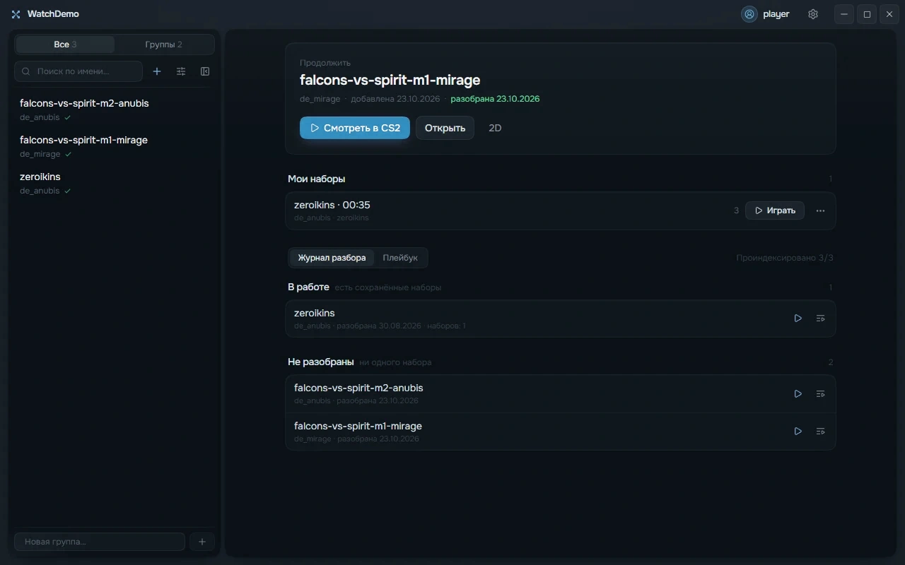
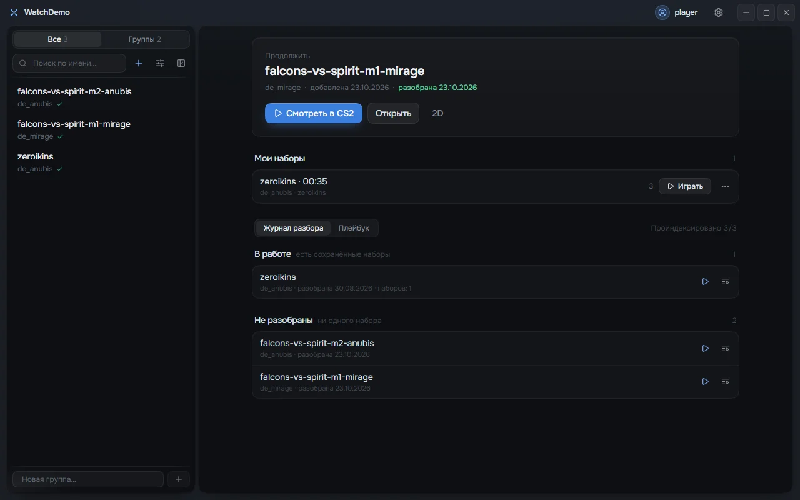

Разбор матча.
Всё в одном месте.
Библиотека демок, моменты, свои наборы и 2D-реплей. Соберите разбор в WatchDemo и смотрите демо прямо в CS2.

B. Пространство разбора
Тот же WatchDemo.
Новая цветовая система.
Сохраняем расположение элементов, названия матчей и содержимое. Здесь показана только палитра на исходном скриншоте, не новая сборка приложения.
Сравнить с исходным скриншотом

Дальше по странице
Два доказательства.
Без подмены демо.
Из WatchDemo прямо в CS2
Отдельный эпизод с настоящей записью запуска. Видеоматериал ещё предстоит снять, выдуманных игровых кадров здесь нет.
Настоящий раунд в 2D
Самостоятельная крупная скролл-сцена с исходными данными Falcons против Spirit на Mirage. На телефоне остаётся большим блоком, а не плавающей полосой.
Что оцениваем сейчас
Широкий настоящий интерфейс, воздух вокруг типографики и видимый рельеф по краям. Самый продуктовый из трёх вариантов.
Сравниваем композицию, масштаб продукта и баланс чёрного, синего и оранжевого. Контуры сейчас статические: это исследование видимости будущей интерактивной ReactBits Topography, а не её замена. Кнопка скачивания в макете ведёт сюда намеренно, файлы не скачивает.